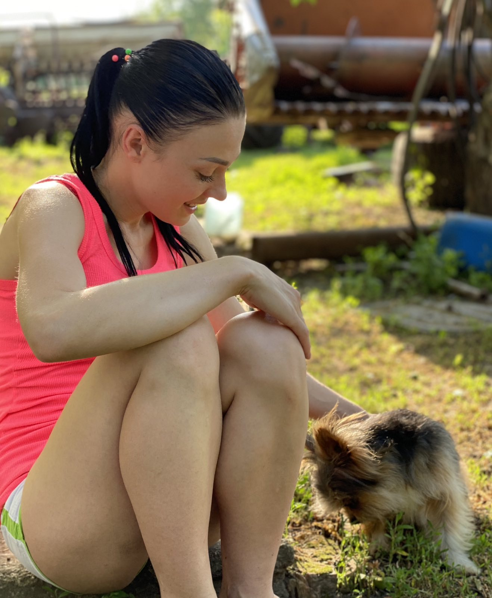

О, це щось особливе! Марина чухала мене так ніжно і водночас так правильно, ніби знала всі мої улюблені місця. Вона починала з-за вушка, легенько торкаючись пальцями, і я відразу починав примружувати очі від задоволення. Потім її рука переходила до мого животика — там я взагалі ставав мов котик, міг перекочуватися з боку на бік, щоб вона не пропустила жодного місця.
Найбільше мені подобалося, коли Марина сміялася під час цього, а я у відповідь радісно виляяв хвостиком. Це було наше маленьке особливе спілкування — без слів, але наповнене любов'ю. І, звісно, як тільки вона зупинялася, я одразу дивився на неї такими очима, ніби казав: "Ще трошки, будь ласка!" І, уявляєте, це завжди працювало! 😊 😴
